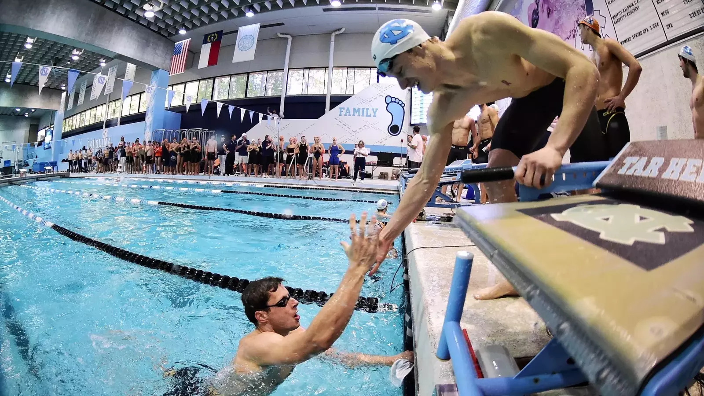

The Tar Heels are heading to Federal Way, Washington this Wednesday to compete in the Division 1 Swimming and Diving National Championships.
This is the biggest collegiate meet of the year, featuring the top swimmers from schools across the country. It’s an exciting opportunity to race at the highest level and showcase the strength of the program.
Stay tuned for updates, results, and highlights as the championship approaches. Go Heels!
